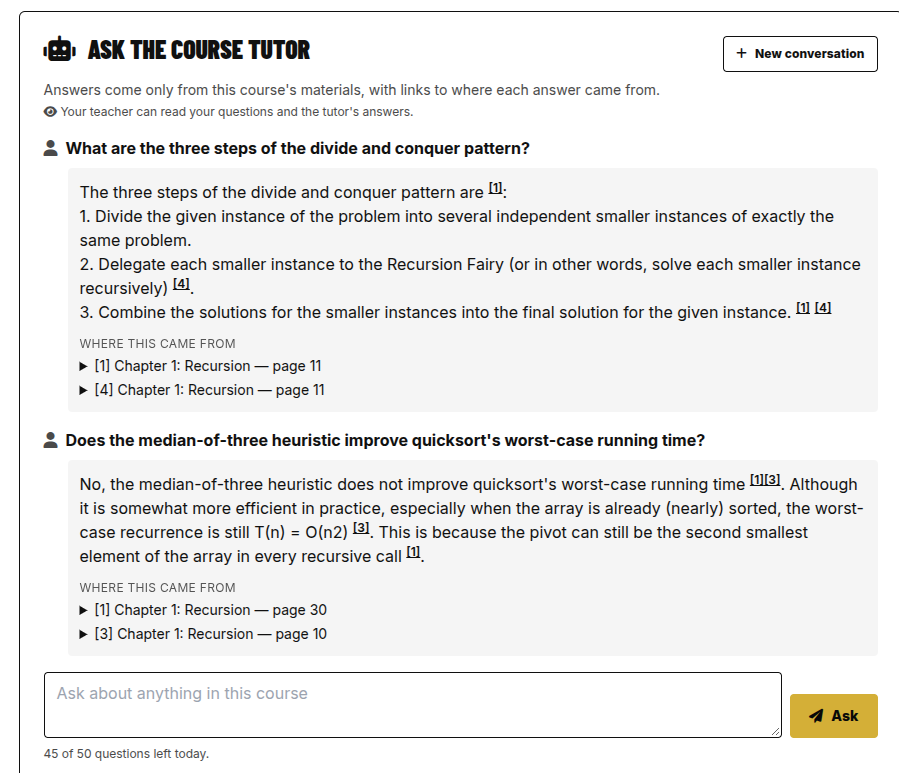
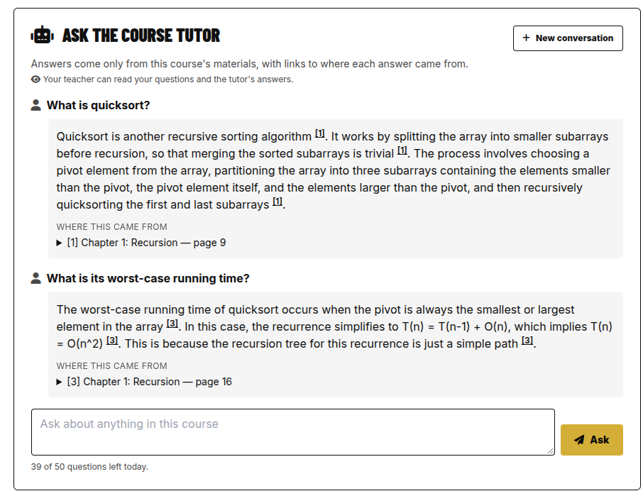
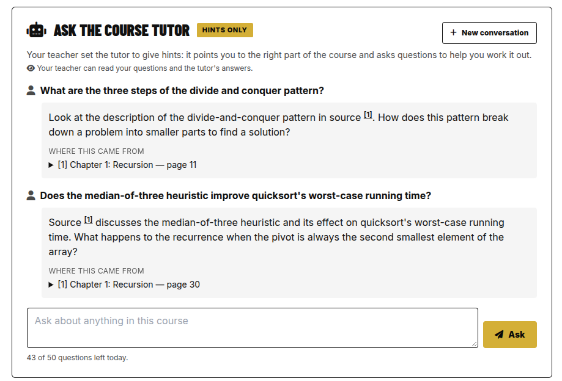
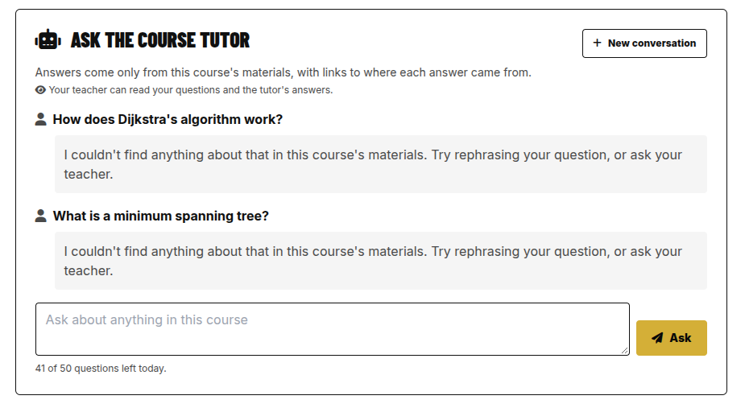

Course-Grounded AI Tutor
GSoC 2027, idea #2, by Mo-Khater. Code: learn/tutor-retrieval
A tutor for each course that answers only from that course's materials, cites the page or slide it used, and follows rules set by the teacher. It runs on Cloudflare: Workers AI, Vectorize, D1 and R2.
Demo
The student's tutor card on an Algorithms course built from four chapters of Jeff Erickson's Algorithms.




Approach
Indexing (when the teacher reindexes)
- Collect course content. Pulls the description, objectives, sessions and materials, and decrypts the stored course text.
- File reading. PDF, Word, Excel and HTML go through Workers AI
toMarkdown. PowerPoint uses a custom parser that keeps slide order and speaker notes. - Sectioning. Splits text into sections, each tagged with a location (e.g. "page 3" or "slide 7") that is later used as the citation.
- Chunking. Removes links, merges tiny sections, splits long ones by meaning (max 1,200 characters), and de-duplicates repeated text.
- Embedding. bge-base-en-v1.5 vectors are stored in Vectorize, and the text is stored encrypted in D1. Only changed chunks are re-embedded.
Answering (when a student asks)
- Refused-topic check. Blocks teacher-banned topics in code before any search or model call.
- Query understanding. Llama 3.1 8B detects follow-ups, writes 3 rewrites of the question, and extracts keywords.
- Search and rerank. Vector search on the question and its rewrites, then bge-reranker-base plus a keyword boost picks the top 5 passages.
- Answer generation. Llama 3.3 70B answers only from those passages, citing each fact. It is skipped if nothing relevant was found.
- Post-checks. Answers where less than half the claims are cited are withheld. Hedged "sources don't say" replies become "not found". Hints that leak the answer are retried, then replaced.
Other controls
The tutor is off by default, has daily limits, and logs every exchange for teacher review. Each course has its own isolated index.
Results
| Benchmark | Correct | Not found | Wrong | Notes |
|---|---|---|---|---|
| Eval set (38 cases) | 37 | – | 1 | - |
| CRAG (38 web questions) | 30 | – | 8 | 79% correct. |
| Qasper (112 paper questions) | 75 | 14 | 23 | 67% correct. |
Retrieval
How often the answer reached the top 5 passages (CRAG, 58 questions where the answer is in the pages):
| Setup | Hits | Rate |
|---|---|---|
| Vector search only | 33 / 58 | 57% |
| + query instruction | 41 / 58 | 71% |
| + reranker | 47 / 58 | 81% |
| + query rewrites | 46 / 58 | 79% |
Query rewrites dropped the rate slightly but are kept because they make follow-up questions work.
PDF extraction
toMarkdown got 26/38 correct and Tesseract OCR got 35/38 on one textbook chapter. OCR is much slower (about 0.5 s per page), so it would need to run as a background job.